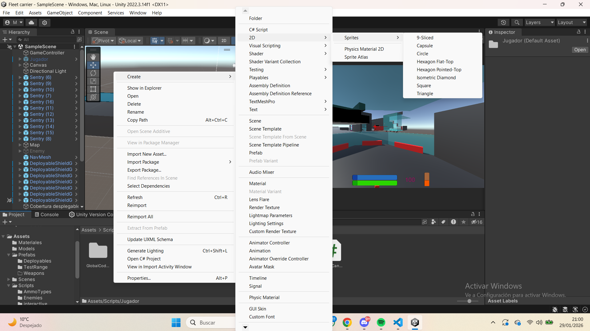
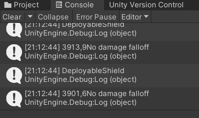

Una vez creado nuestro proyecto en Unity comenzaremos por crear un objeto( puede ser cualquiera ) y crearemos un pequeño codigo ( en esta pagina se asume que ya sabes usar C#, si no es el caso puedes aprender aqui ), una vez completado el codigo lo arrastraremos a nuestro objeto y al correr el programa ( botón triangular ) veremos que hace lo que queriamos que hiciera. Si hacemos un codigo pero no lo aisgnamos a ningun objeto este codigo no hará nada.
Para crear objetos, carpetas, codigos... es tan sencillo como hacer click derecho en donde se desee crear dicha entidad y de un desplegable elegir lo que se desea crear. Los objetos se crean en la jerarquia y los codigos, carpetas y demás en la carpeta "Proyect".
Uso de la consola: La consola es una herramienta extremadamente valiosa aunque el jugador nunca vaya a verla, a nosotros, los desarrolladores nos ayuda a detectar errores y a poder hacer un seguimiento de funciones anidadas. Es recomendable jugar un rato con ella cuando crees algo para darte cuenta de posibles errores en los valores de las variables
A la derecha en la segunda imagen puede verse como se usa la consola para hacer un seguimiento de en que impactan las balas del jugador ademas de cuanta vida le quedan al objeto alcanzado

